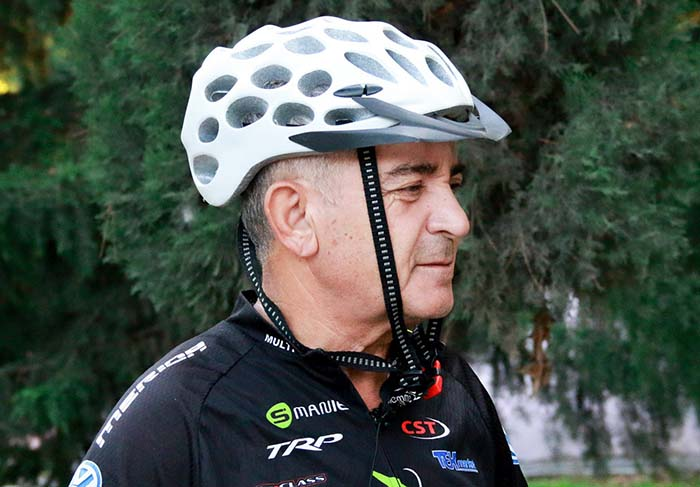
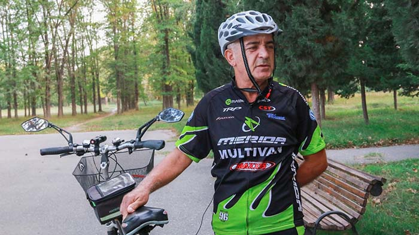

Dimentica tutto ciò che sapevi sui condroprotettori. Questo prodotto aiuta anche nei casi peggiori.
Fatto noto: le articolazioni malate sono la via diretta per finire sulla sedia a rotelle e smettere di vivere una vita piena. Ma le storie delle persone che sono riuscite a guarire ci fanno capire che la disperazione non ha senso neanche nei casi più disperati.
Ecco un esempio: Marco Vassallo, vincitore di diverse maratone in bicicletta. Marco ha 62 anni e sa bene cosa sia l’artrite. Ma grazie a un prodotto innovativo ed economico il pensionato è riuscito a tornare ad una vita piena.
È proprio questo che Marco ha raccontato al nostro giornalista.
Marco VassalloGiornalista:Com'è stata la tua riabilitazione dopo la malattia e come sei tornato a praticare sport su ruote?
Marco: Ho iniziato piano piano: ginnastica mattutina e corsa leggera. Poi i bambini mi hanno regalato una cyclette. Mi ci sono dovuto abituare al pensiero: ma è possibile che debba pedalare come uno stupido dentro casa? Poi ho iniziato a girare per strada in bicicletta, facevo qualsiasi percorso.
Quando ho saputo della maratona in bici «per quelli che hanno più di…». Ho deciso: «Perché non provarci?» E al primo tentativo in vita mia ho preso il primo posto. È stato inaspettato, ma è stato bellissimo. Certo la vittoria ha fatto si che questa maratona non rimanesse un soltanto un episodio.
Giornalista: Da quanto tempo lei ha l’artrite?
Marco: l’artrite mi ha accompagnato per più di 10 anni. Provavo dei dolori tremendi, insopportabili. Non potevo fare un movimento di troppo senza antidolorifico. L'artrite è il tipo di malattia che non ti lascia in pace un minuto. Mi capiranno solo coloro che l'hanno provato in prima persona. Ho ascoltato qualsiasi consiglio, a volte anche il più assurdo. Pazzesco, ma circa quattro anni fa ho anche provato a trattare le articolazioni con il letame. Esternamente, ovviamente.
Si, a volte il dolore fisico impedisce di pensare razionalmente.
Giornalista: Alla fine con cosa ha curato l’artrite?
Marco: Mi ha salvato il gel . Quando ho iniziato il ciclo questo prodotto ero moralmente pronto al peggio, ma non avevo perso la fiducia.

E il «miracolo» è successo: già dopo una settimana dall’inizio del ciclo mi sono sentito molto meglio. Non ci ho prestato troppa attenzione dato che sono abituato a essere scettico su qualsiasi cosa. Pensavo fosse semplicemente passata la crisi. Quindi pensavo fosse come sempre. Poi un’altra settimana e un’altra ancora, ma stavo sempre meglio.
Dopo aver finito il ciclo con il gel ho fatto tutte le analisi. Il mio specialista era più sorpreso di me, nel senso buono. Era tutto nella norma, ero una persona sana, sembrava non avessi mai avuto problemi alle articolazioni.
A cosa è dovuto l’effetto magico del gel ? L'abbiamo chiesto al noto specialista in reumatologia, il sig. Giorgio Pelligrino.
 Giorgio Pelligrino
Giorgio Pelligrino
« gel, come è stato chiamato, è un condroprotettore di quinta generazione. È composto da cinque principali categorie di componenti:
-Vitamina B3: elimina le formazioni stagnanti, nutre, tonifica, favorisce la rigenerazione dei tessuti.
-Pantenolo, allantoina: fermano le perdite di sangue, favoriscono la formazione di una superficie protettiva sui tessuti infiammati.
-Oli essenziali di menta, cannella, eucalipto: prevengono l’usura di articolazioni e legamenti, alleviano i dolori articolari, nutrono il tessuto connettivo.
-Estratti di artiglio del diavolo, arnica: aumentano la mobilità articolare, migliorano la circolazione sanguigna.
-Glucosamina e Condroitina: rafforzano la cartilagine, i tendini, i legamenti, alleviano l'infiammazione e il gonfiore, favoriscono la rigenerazione attiva della cartilagine.
Il gel va applicato sulla pelle pulita e asciutta e si stende con delicati movimenti massaggianti. Applicazione va fatta 2-3 volte al giorno.
La forza d’azione sulla malattia supera qualsiasi preparato esistente.
Il gel non è il solito condroprotettore. Non si limita a proteggere le articolazioni dallo sviluppo degenerativo. Avvia il processo di rigenerazione dei tessuti.
Il gel e completamente naturale 100% ha ottenuto tutta la certificazione dal Ministero Della Salute Italiana.
Nonostante la sua incredibile efficacia, il gel è molto difficile da trovare in farmacia, praticamente impossibile. Fortunatamente la nostra redazione ha contattato il produttore ed ha trovato il sito ufficiale, dove si può ordinare il gel senza rincaro medico.
Ottieni per la
partecipazione
al discount club, lo sconto di
50%
Commenti
Grazie, Marco, per aver raccontato di questo fantastico prodotto! L’ho ordinato, non vedo l’ora mi arrivi il pacco
Anche io l’ho ordinato
Avevo l’artrite al polso. L’infiammazione sinoviale e dei dolori atroci. Lo specialista mi ha prescritto gel, l’ho trovato a fatica in farmacia, grazie mille per il link!
Grazie mille per questo prodotto! Dopo 3 anni è una catastrofe. Le mie articolazioni stavano a pezzi, non riuscivo a camminare bene! La mia salvezza è stato il gel . Ad essere sincera non credevo che mi avrebbe mai aiutato. Ma dopo due giorni già mi sentivo molto meglio. In una settimana i dolori sono scomparsi completamente. In un mese e mezzo circa le articolazioni si sono ripristinate. Me lo hanno confermato in clinica. Lo raccomando a tutti.
Ho letto più informazioni sul gel sul sito ufficiale. Lascia a bocca aperta! L’ho ordinato finché c’è disponibilità.
Ho 50 anni! Il gel l’ho provato l’hanno scorso. Mi ha salvato. Mi facevano male le articolazioni delle dita. Ora è tutto passato. L’ho preso da solo, senza specialisti.
Ho compilato il modulo, attendo il pacco! Grazie Marco per il tuo racconto qui! Sei un grande, continua così!!
Una mia amica ha preso il gel . Soffre con le articolazioni da tempo. Si è trovata molto bene, lo racconta a tutti.
Il gel è un ottimo preparato per curare le articolazioni. L’ho provato in prima persona. Ho avuto problemi alla schiena per tutta la vita. Un problema ereditario. Ho provato tutti i massaggiatori, tutti i terapisti possibili. Negli ultimi anni facevo fatica pure con i lacci. Poi in una rivista ho letto di questo prodotto. Ho deciso di provare, l’ho ordinato sul sito ufficiale. Non mi sono curato fino alla fine, ma sto molto, molto meglio. Senza punture, pillole e creme, che non mi avevano minimamente aiutato neanche lontanamente come il gel . Sono molto soddisfatto.
Si, le riviste parlano del gel che ripristina le articolazioni. Ne hanno parlato come una rivoluzione in campo medico. Devo provare a ordinarlo.
Io ieri l’ho ritirato dal corriere. Ho già iniziato il corso.
Ho passato metà della vita con le ginocchia doloranti. Su consiglio dello specialista ho iniziato a prendere il gel . Come risultato sono sei mesi che non ho dolori. Prima, come Marco, non riuscivo a muovermi. Ora vado in palestra e la mattina corro.
Grazie per il link! Interessante. Ho compilato il modulo.